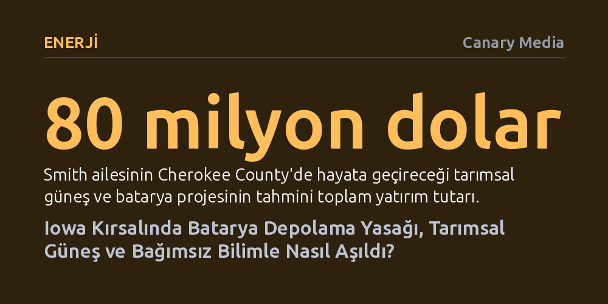

ENERJI · Canary Media · 2026-10-09
Iowa’daki bir tarım ilçesi, tarımsal güneş enerjisini şebeke bataryalarıyla birleştirmek isteyen çiftçilerin ve bağımsız uzmanların yürüttüğü ikna süreci sayesinde batarya depolama yasağını oy birliğiyle kaldırdı. Bu vaka, kırsalda hızla yayılan temiz enerji moratoryumlarının yerel mülkiyet ve güvenlik diyaloglarıyla aşılabileceğini kanıtlıyor.
Temiz enerji dönüşümünde kırsal direncin kaçınılmaz olmadığını; mülkiyet hakları, bağımsız mühendislik bilgisi ve yerel ekonomik fayda ekseninde kurulan açık bir diyaloğun yasakları tersine çevirebileceğini gösteriyor.

Cherokee County’de altı nesildir tarımla uğraşan Smith ailesi, son dönemde düşen mısır fiyatları ve artan sığır eti getirisi karşısında 160 dönümlük arazileri için yeni bir model arayışına girdi. Çözüm, bölgede yapay zeka veri merkezlerinin tetiklediği devasa elektrik talebiyle birleşen yenilikçi bir fikirde bulundu: Güneş panellerinin altında sığır otlatmak.
Ancak güneş panellerini otlayan hayvanların zarar görmeyeceği yüksekliğe yerleştirmek, standart güneş santrallerine kıyasla ciddi bir ek maliyet doğuruyor. Smith kardeşler bu ek masrafı dengelemek için 30 megavatlık tarımsal güneş kapasitesini, yaklaşık bir buçuk dönüm yer kaplayan 25 megavat / 100 megavatsaatlik konteyner tipi bir batarya depolama tesisiyle birleştirmeyi planladı.
Fakat proje yerel yönetimin radarına girdiğinde beklenmedik bir duvara tosladı. İlçe yöneticileri, 24 Mart tarihinde ilçedeki tüm batarya projelerini süresiz olarak durduran bir moratoryum ilan ederek onlarca milyon dolarlık finansmanı bir anda tehlikeye attı.
Iowa aslında rüzgar enerjisinde 13 gigavatlık kurulu gücüyle ABD lideri konumunda. Ancak 2000'lerin başındaki kontrolsüz rüzgar yatırımları, imar planı bulunmayan birçok kırsal ilçede yerel halkın hafızasında olumsuz izler bıraktı. Bu geçmiş tecrübe, yerel yönetimlerin rüzgar ve güneş projelerine karşı giderek daha temkinli ve kısıtlayıcı düzenlemeler getirmesine yol açtı.
Batarya projelerinde ise bu temkinlilik somut bir yangın korkusuna dönüştü. Özellikle Kaliforniya’daki Moss Landing tesisinde yaşanan ve günlerce süren lityum iyon batarya yangınları, kırsal topluluklarda ciddi bir güvenlik endişesi yarattı. Yetersiz donanıma sahip yerel itfaiye ekiplerinin zehirli duman veya termal reaksiyonlarla nasıl başa çıkacağı sorusu, benzer moratoryumların ülke genelinde yayılmasına zemin hazırladı.
Temiz enerjiye, yapay zeka altyapısına ve şebeke esnekliğine duyulan ihtiyacın zirve yaptığı bir dönemde kırsal yönetimlerin aldığı bu yasak kararları, ülkedeki sıfır emisyonlu kapasite artışını kilitleyen en büyük engellerden birine dönüşmüş durumdaydı.
Yasağın usul hatalarını mahkemeye taşımak yerine toplumu ikna etme yolunu seçen Smith ailesi, yönetim kurulunda moratoryuma karşı tek hayır oyunu veren denetçi Shane Bellefy ile ortak hareket etti. Aynı zamanda bankacı olan Bellefy, projenin ilçeye kazandıracağı 80 milyon dolarlık yatırımı ve yılda 80 bin dolara varan yeni vergi gelirini öne çıkararak meslektaşlarına ekonomik gerçekleri anlattı.
İkna sürecinin teknik ayağını ise Iowa Eyalet Üniversitesi araştırmacısı Luke Seaberg üstlendi. Seaberg, halka açık oturumlarda batarya sektörünün Moss Landing döneminden bu yana geçirdiği evrimi anlattı. Yeni tesislerde termal kaçak riski çok daha düşük olan lityum demir fosfat (LFP) kimyasına geçildiğini, yangının yayılmasını önleyen bağımsız modüler konteynerlerin kullanıldığını ve sıkı güvenlik kodlarının devreye girdiğini somut verilerle açıkladı.
Sürece yerel itfaiye şefinin de dahil olup güvenlik endişelerini dağıtması ve mülkiyet haklarını savunan sivil toplum ağlarının desteği, muhafazakar bir tarım topluluğunda teknolojinin bir tehdit değil, mülkiyet özgürlüğü ve gelir kaynağı olarak görülmesini sağladı.
Yürütülen yoğun bilgilendirme çalışmalarının ardından ilçe yönetim kurulu, 26 Ağustos günü yapılan oylamada batarya depolama standartlarını belirleyen yeni yönetmeliği 5-0 oy birliğiyle kabul etti. Böylece aylar önce süresiz olarak durdurulan teknoloji, beş ay gibi kısa bir sürede ilçenin onayladığı bir yatırıma dönüştü.
Bu uzlaşı, kırsal topluluklarda yenilenebilir enerjiye karşı yükselen itirazların kader olmadığını gösteriyor. Tepeden inme zorlamalar yerine bağımsız bilimsel veriye dayalı açık oturumlar, yerel mülkiyet haklarına saygı ve yerel bütçeye somut katkı sunan modeller devreye girdiğinde en sert moratoryumlar dahi aşılabiliyor.
Smith ailesi, gerekli izinlerin tamamlanmasıyla birlikte önümüzdeki baharda arazilerini meraya çevirip sonbaharda güneş panelleri ve batarya konteynerlerinin montajına başlamayı hedefliyor.